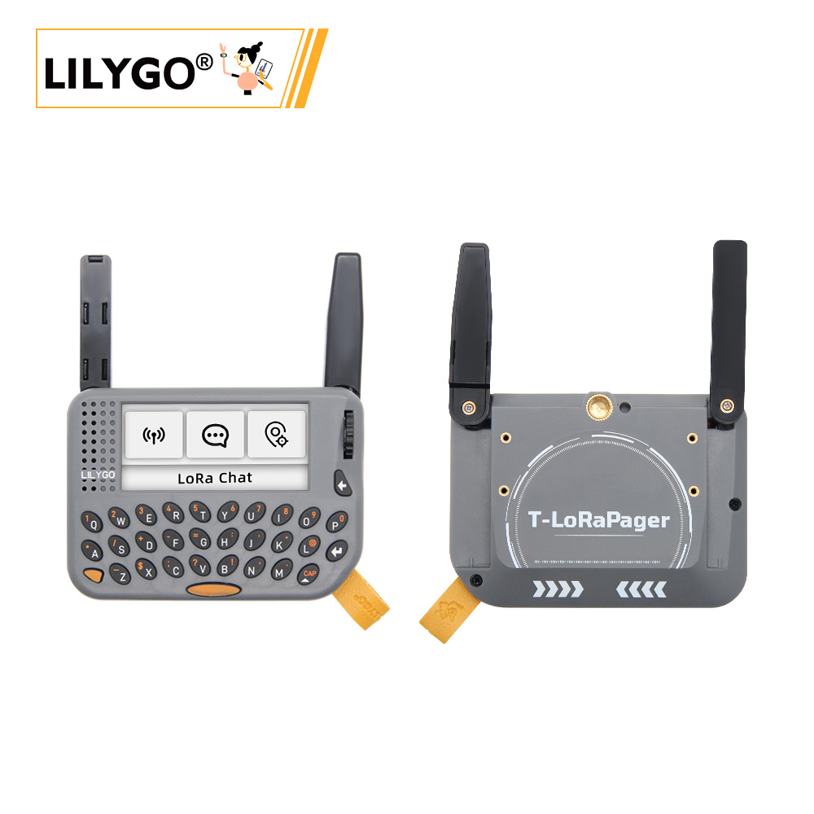
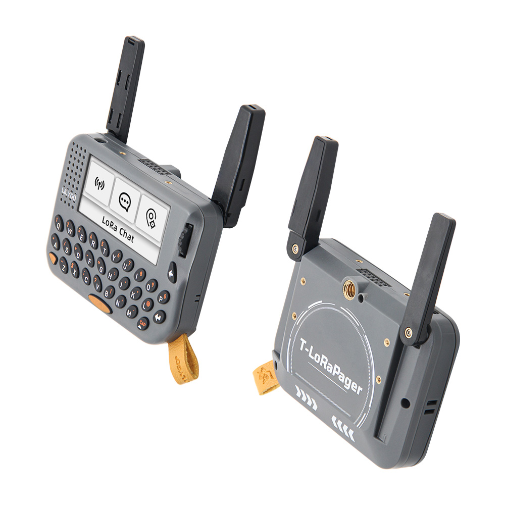
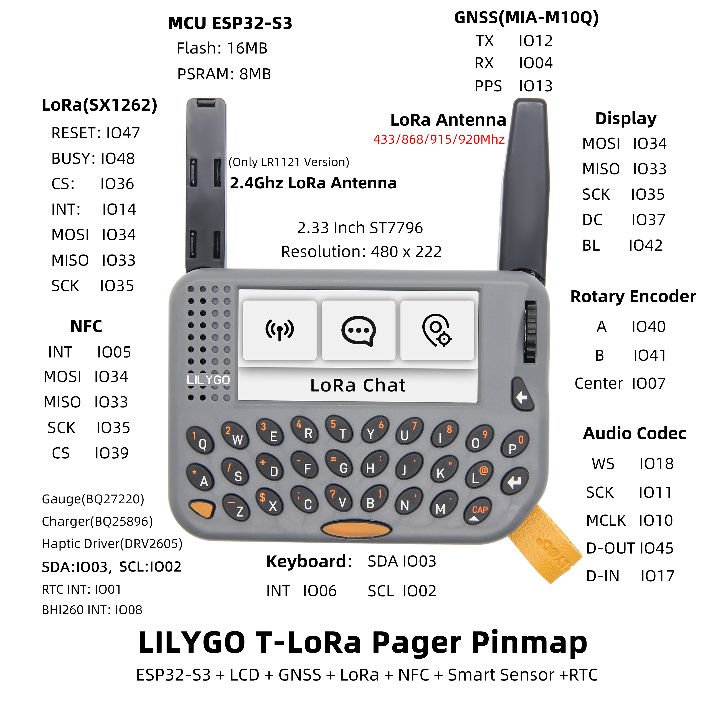
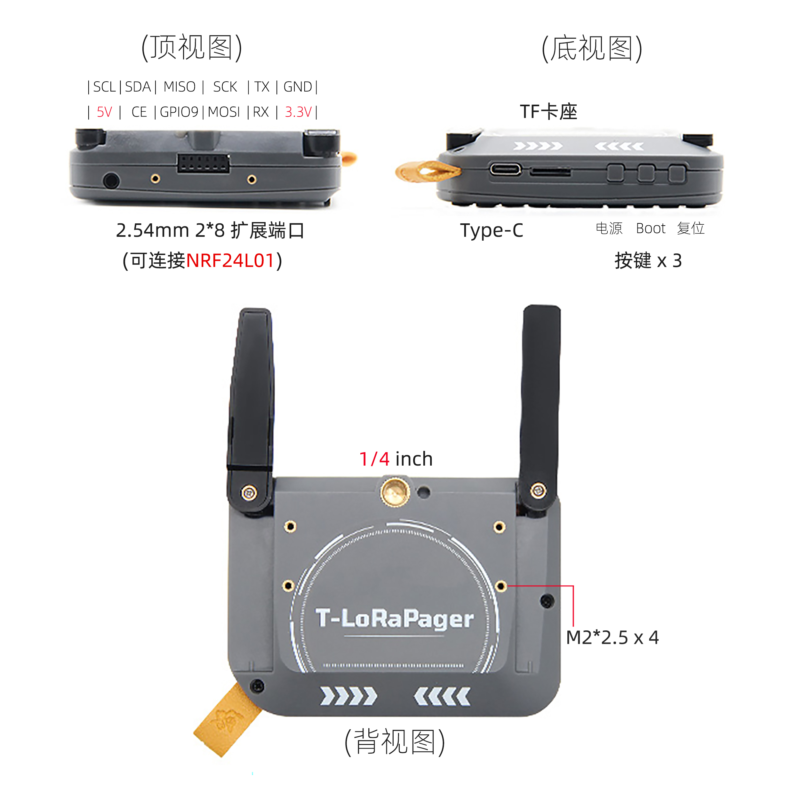
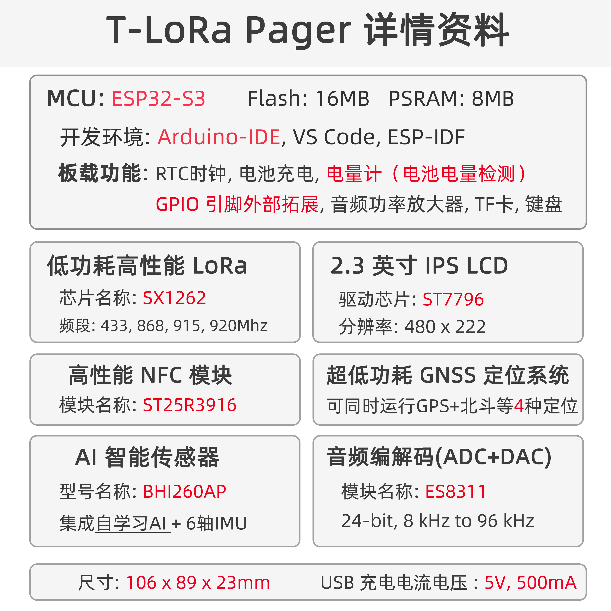

中文 简体
中文 简体LILYGO T-LoraPager

版本迭代:
| Version | Update date | Update description |
|---|---|---|
| T-LoraPager_V1.0 | 2024-08-05 | 初始版本 |
购买链接
| Product | SOC | FLASH | PSRAM | LoRa | Link |
|---|---|---|---|---|---|
| T-LoraPager | ESP32-S3 | 16M | 8M | SX1262 (433-920MHz) | LILYGO Mall |
目录
描述
T-LoraPager 是一款 LILYGO 推出的手持式 AIOT 可编程开发设备，集成了 ESP32-S3 高性能 Wi-Fi/蓝牙双模芯片与多种无线通信模块。设备采用小巧外观与可折叠外部天线设计，在保证无线性能的同时兼顾美观。提供多种版本选择，主要区别在于 LoRa 模块（LR1121、SX1262 或 CC1101），用户可根据应用需求选购。
开发板功能丰富，集成 QWERT 键盘、支持 AI 的 IMU（BHI260AP）、2.33 英寸长条屏（480×222 分辨率）、U-blox GPS 模组（MIA-M10Q）、RFID/NFC、RTC 电路、TI 电源管理芯片、ES8311 音频编解码器（支持麦克风、扬声器、耳机）、旋转编码器、GPIO 扩展接口等。背部设计有 1/4 固定螺丝接口与 M2 螺丝柱，并附带挂绳，便于携带与固定。出厂固件包含 LILYGO 设计的 UI Demo，可通过编码器进行流畅交互，适合智能穿戴、物联网定位、数据采集等场景开发。
预览
实物图

引脚图

三视图

模块
| Features | Params |
|---|---|
| SOC | Espressif ESP32-S3 |
| Flash | 16MB(QSPI) |
| PSRAM | 8MB (QSPI) |
| GNSS | UBlox MIA-M10Q |
| LoRa | Semtech SX1262 |
| NFC | ST25R3916 |
| Smart sensor | Bosch BHI260AP |
| Real-Time Clock | NXP PCF85063A |
| Battery Charger | Ti BQ25896 |
| Battery Gauge | Ti BQ27220 |
| Haptic driver | Ti DRV2605 |
| Audio Codec | Everest-semi ES8311 |
| GPIO Expand | XINLUDA XL9555 |
| I2C Keyboard | Ti TCA8418 |
| Audio Power Amplifier | Nsiway NS4150B(3W Class D) |
| Display Backlight Driver | AW9364 16-Level Led Driver |
| SD Card Socket | ✅️ Maximum 32GB (FAT32 format) |
| External low speed clock crystal | ✅️ |
MCU
- 芯片：ESP32-S3
- PSRAM：8M
- FLASH：16M
- 其他说明：更多资料请访问乐鑫官方ESP32-S3数据手册
屏幕
- 尺寸：2.33英寸 LCD
- 分辨率：480x222px
- 屏幕类型：LCD
- 驱动芯片：ST7796
- 总线通信协议：SPI
| Features | Params |
|---|---|
| Resolution | 480 x 222 |
| Display Size | 2.33 Inch |
| Luminance on surface | 450 cd/m² |
| Driver IC | ST7796U (SPI) |
| Contrast ratio | 1000:1 |
| Color gamut | 70% |
| PPI | 221 |
| Display Colors | 262K |
| View Direction | All (IPS) |
| Operating Temperature | -20～70°C |
LoRa
- 芯片：SX1262（可选 LR1121 / CC1101）
- 频率：433MHz ~ 920MHz
GPS
- 芯片：MIA-M10Q
- 特性：低功耗 GNSS，支持 4 星并发
AI 传感器
- 芯片：BHI260AP
- 特性：支持 AI 的 IMU
音频
- 芯片：ES8311
- 特性：24-bit，8kHz ~ 96kHz
RTC
- 芯片：内置
- 特性：支持电源开关
概述

| 组件 | 描述 |
|---|---|
| MCU | ESP32-S3 |
| FLASH | 16MB |
| PSRAM | 8MB |
| 屏幕 | 2.33 英寸 ST7796 LCD |
| LoRa | SX1262 (433-920MHz) |
| GPS | MIA-M10Q |
| NFC | ST25R3916 (SPI) |
| 存储 | TF 卡 |
| AI 传感器 | BHI260AP |
| 音频解码器 | ES8311 |
| 无线 | 2.4 GHz Wi-Fi & Bluetooth 5 (LE) |
| USB | 1 × USB Port (TYPE-C接口) |
| IO 拓展 | PCA9535PW (I2C) |
| 输入 | QWERT 键盘 + 旋转编码器 |
| 按键 | 1 x RESET 按键 + 1 x BOOT 按键 |
| 拓展接口 | GPS 接口 + 2 x Knockout + 2.54mm 2*8 GPIO |
| 孔位 | 1/4英寸固定螺丝接口 + 4 x M2 背孔 |
| 尺寸 | 106x89x23mm |
快速开始
示例支持
| Example | PlatformIO/Arduino | ESP-IDF | Description |
|---|---|---|---|
| UI Demo | ✓ | 出厂 UI 演示程序 | |
| LoRa Example | ✓ | LoRa 通信示例 | |
| GPS Example | ✓ | GPS 定位示例 | |
| Keyboard Example | ✓ | 键盘输入示例 | |
| Audio Example | ✓ | 音频播放示例 |
PlatformIO
- 安装 Visual Studio Code。
- 在扩展中搜索并安装 "PlatformIO IDE"。
- 从 GitHub 下载 T-LoraPager 项目代码。
- 在 VS Code 中打开项目文件夹，编辑
platformio.ini文件选择所需环境。 - 连接设备，编译并烧录程序。
Arduino
- 下载 LilyGoLib 库
- 打开
Arduino IDE->项目->加载库->添加 .ZIP 库->选择第 3 步下载的库压缩包 - 安装 LilyGoLib-ThirdParty
- 将 LilyGoLib-ThirdParty 中的所有目录复制到 ArduinoIDE 的库目录中，如果没有
libraries目录，请手动创建。 - 请注意不是复制
LilyGoLib-ThirdParty目录本身，而是复制该目录下的所有文件夹到 libraries 目录中 - 如何查找计算机上的库文件位置，请参阅此处
- Windows:
C:\Users\{用户名}\Documents\Arduino - macOS:
/Users/{用户名}/Documents/Arduino - Linux:
/home/{用户名}/Arduino
- Windows:
- 将 LilyGoLib-ThirdParty 中的所有目录复制到 ArduinoIDE 的库目录中，如果没有
请注意 LilyGoLib-ThirdParty 中的库不一定是最新版本。在确认硬件运行正常之前，请不要升级依赖库的版本。
ArduinoIDE 每次打开都会提示有新的库版本可升级。
请确认运行正常后再尝试更新到最新版本。如遇到问题，请回退到能正常运行的依赖库版本。
文件->示例->LilyGOLib->helloworld工具->开发板->esp32，请从下表中选择相应配置
| Arduino IDE Setting | Value |
|---|---|
| Board | LilyGo-T-LoRa-Pager |
| Port | Your port |
| USB CDC On Boot | Enabled |
| CPU Frequency | 240MHZ(WiFi) |
| Core Debug Level | None |
| USB DFU On Boot | Disable |
| Erase All Flash Before Sketch Upload | Disable |
| Events Run On | Core 1 |
| JTAG Adapter | Disable |
| Arduino Runs On | Core 1 |
| USB Firmware MSC On Boot | Disable |
| Partition Scheme | 16M Flash(3M APP/9.9MB FATFS) |
| Board Revision | Radio-SX1262 |
| Upload Mode | UART0/Hardware CDC |
| Upload Speed | 921600 |
| USB Mode | CDC and JTAG |
- 开发板版本选项，请根据实际购买的射频类型选择。当前选项有：
- Radio-SX1262(Sub 1G LoRa)
- Radio-SX1280(2.4G LoRa)
- Radio-CC1101(Sub 1G (G)MSK, 2(G)FSK, 4(G)FSK, ASK, OOK)
- Radio-LR1121(Sub 1G + 2.4G LoRa)
- Radio-SI4432(Sub 1G ISM)
- 选择
端口 - 点击
上传，等待编译和写入完成 - 如果无法上传程序或 USB 设备在计算机上不断弹出，请手动将设备进入下载模式。如何进入下载模式，请参阅此处
- 如果串口没有消息输出，请检查 USB CDC ON Boot 是否设置为 Enabled。
- 开发板版本根据实际射频模块型号变化。当前默认版本为 SX1262
- 本库依赖于最新版 arduino-esp32，如果低于 V3.3.0-alpha1 版本会报错。
开发平台
引脚总览
| Name | GPIO NUM | Free |
|---|---|---|
| Custom Pin | GPIO9 (External 12-Pin socket) | ✅️ |
| Uart1 TX | 43(External 12-Pin socket) | ✅️ |
| Uart1 RX | 44(External 12-Pin socket) | ✅️ |
| SDA | 3 | ❌ |
| SCL | 2 | ❌ |
| SPI MOSI | 34 | ❌ |
| SPI MISO | 33 | ❌ |
| SPI SCK | 35 | ❌ |
| SD CS | 21 | ❌ |
| SD MOSI | Share with SPI bus | ❌ |
| SD MISO | Share with SPI bus | ❌ |
| SD SCK | Share with SPI bus | ❌ |
| Keyboard(TCA8418) SDA | Share with I2C bus | ❌ |
| Keyboard(TCA8418) SCL | Share with I2C bus | ❌ |
| Keyboard(TCA8418) Interrupt | 6 | ❌ |
| Keyboard Backlight | 46 | ❌ |
| Rotary Encoder A | 40 | ❌ |
| Rotary Encoder B | 41 | ❌ |
| Rotary Encoder Center | 7 | ❌ |
| RTC(PCF85063A) SDA | Share with I2C bus | ❌ |
| RTC(PCF85063A) SCL | Share with I2C bus | ❌ |
| RTC(PCF85063A) Interrupt | 1 | ❌ |
| NFC(ST25R3916) CS | 39 | ❌ |
| NFC(ST25R3916) Interrupt | 5 | ❌ |
| NFC(ST25R3916) MOSI | Share with SPI bus | ❌ |
| NFC(ST25R3916) MISO | Share with SPI bus | ❌ |
| NFC(ST25R3916) SCK | Share with SPI bus | ❌ |
| Sensor(BHI260) Interrupt | 8 | ❌ |
| Sensor(BHI260) SDA | Share with I2C bus | ❌ |
| Sensor(BHI260) SCL | Share with I2C bus | ❌ |
| Audio Codec(ES8311) WS | 18 | ❌ |
| Audio Codec(ES8311) SCK | 11 | ❌ |
| Audio Codec(ES8311) MCLK | 10 | ❌ |
| Audio Codec(ES8311) data out | 45 | ❌ |
| Audio Codec(ES8311) data in | 17 | ❌ |
| Audio Codec(ES8311) SDA | Share with I2C bus | ❌ |
| Audio Codec(ES8311) SCL | Share with I2C bus | ❌ |
| GNSS(MIA-M10Q) TX | 12 | ❌ |
| GNSS(MIA-M10Q) RX | 4 | ❌ |
| GNSS(MIA-M10Q) PPS | 13 | ❌ |
| LoRa(SX1262 or SX1280) SCK | Share with SPI bus | ❌ |
| LoRa(SX1262 or SX1280) MISO | Share with SPI bus | ❌ |
| LoRa(SX1262 or SX1280) MOSI | Share with SPI bus | ❌ |
| LoRa(SX1262 or SX1280) RESET | 47 | ❌ |
| LoRa(SX1262 or SX1280) BUSY | 48 | ❌ |
| LoRa(SX1262 or SX1280) CS | 36 | ❌ |
| LoRa(SX1262 or SX1280) Interrupt | 14 | ❌ |
| Display CS | 38 | ❌ |
| Display MOSI | Share with SPI bus | ❌ |
| Display MISO | Share with SPI bus | ❌ |
| Display SCK | Share with SPI bus | ❌ |
| Display DC | 37 | ❌ |
| Display RESET | Not Connected | ❌ |
| Display Backlight(16 Level) | 42 | ❌ |
| Gauge(BQ27220) SDA | Share with I2C bus | ❌ |
| Gauge(BQ27220) SCL | Share with I2C bus | ❌ |
| Charger(BQ25896) SDA | Share with I2C bus | ❌ |
| Charger(BQ25896) SCL | Share with I2C bus | ❌ |
| Haptic Driver(DRV2605) SDA | Share with I2C bus | ❌ |
| Haptic Driver(DRV2605) SCL | Share with I2C bus | ❌ |
| Expand(XL9555) SDA | Share with I2C bus | ❌ |
| Expand(XL9555) SCL | Share with I2C bus | ❌ |
| Expand(XL9555) GPIO0 | Haptic Driver Enable | ❌ |
| Expand(XL9555) GPIO1 | Audio Power Amplifier Enable | ❌ |
| Expand(XL9555) GPIO2 | Keyboard RESET | ❌ |
| Expand(XL9555) GPIO3 | LoRa Power supply Enable | ❌ |
| Expand(XL9555) GPIO4 | GNSS Power supply Enable | ❌ |
| Expand(XL9555) GPIO5 | NFC Power supply Enable | ❌ |
| Expand(XL9555) GPIO6 | ❌ | |
| Expand(XL9555) GPIO7 | GNSS RESET | ❌ |
| Expand(XL9555) GPIO10 | Keyboard Power supply Enable | ❌ |
| Expand(XL9555) GPIO11 | External 12-Pin socket | ✅️ |
| Expand(XL9555) GPIO12 | SD Insert Detect | ❌ |
| Expand(XL9555) GPIO14 | SD Power supply Enable | ❌ |
相关测试
功耗测试
| Mode | Wake-Up Mode | Current |
|---|---|---|
| DeepSleep | BootButton | 530uA |
| DeepSleep | Timer | 530uA |
| LightSleep | BootButton | ~2.26mA |
| Power OFF | PowerButton | 26uA |
常见问题
Q. 如何选择不同版本的 T-LoraPager？
A. 根据应用需求选择 LoRa 模块：SX1262 适用于长距离通信，LR1121 支持多频段，CC1101 适用于低成本 Sub-1GHz 应用。Q. 设备无法烧录程序怎么办？
A. 确保 USB CDC On Boot 已启用，并按住 BOOT 按键再点击 RESET 进入下载模式。Q. GPS 定位慢或无信号？
A. 确保在户外开阔地区使用，并检查天线连接是否良好。